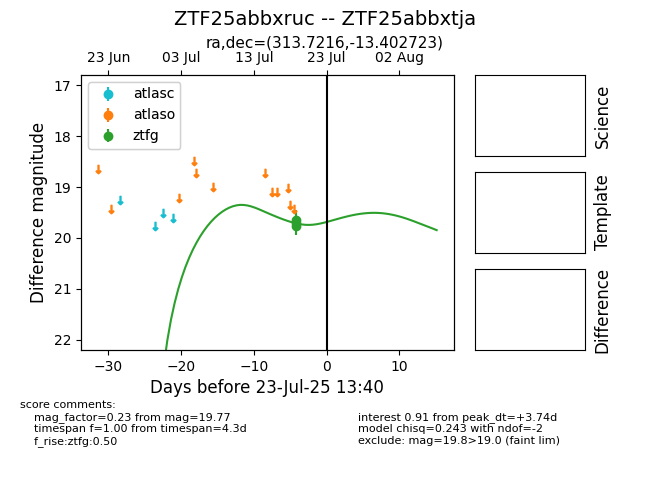

Target ZTF25abbxruc at 2025-07-23 13:40, see:
FINK: fink-portal.org/ZTF25abbxruc
Lasair: lasair-ztf.lsst.ac.uk/objects/ZTF25abbxruc
ALeRCE: alerce.online/object/ZTF25abbxruc
alt names
ZTF25abbxtja (ztf,fink)
ZTF25abbxruc (
coordinates:
equatorial (ra, dec) = (313.7216,-13.40272)
galactic (l, b) = (34.3892,-33.35335)
photometry
last ztfg=19.77
3 ztfg detections
